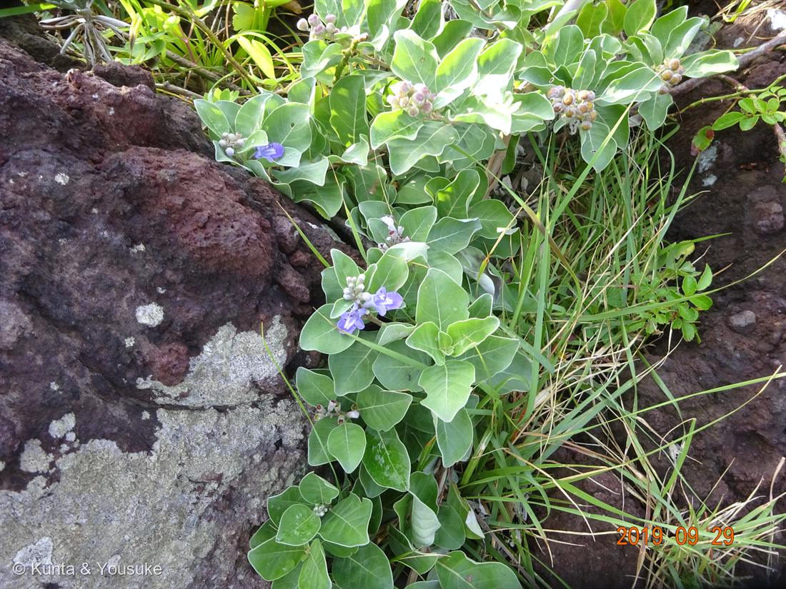

地図を読み込んでいるよ…
🔍 写真も地図も、押しているあいだ拡大して見られるよ（スマホは指を置いてすこし待ってね）。
🌍 の地図＝この子がもともと自生している場所を緑に。日本（本州〜沖縄）・東アジア〜オセアニアの海岸に広く分布。
⭐日本が塗ってある、数少ない子（本州〜沖縄の海岸）。⚠海岸線ぞいにだけいる子なので、ほんとうは県の内陸にはいない。地図は海のふちだけを塗れないから、県まるごと緑になっているよ。
⚠ 地図は国（日本と中国だけ県・省）までしか塗れないから、ほんとうの分布より広く見えていることがあるよ。地図はだいたいの場所。正確なところは、上の文を見てね。
ハマゴウ（浜栲・蔓荊）
Vitex rotundifolia L.f.
別名 · ハマハイ／ハマホウ ／ 生薬名 · 蔓荊子（まんけいし）・蔓荊葉（まんけいよう）
シソ科 · Lamiaceae（旧クマツヅラ科 Verbenaceae／ハマゴウ属 Vitex）
燻太さんの手がかり3つが、ぜんぶ当たり「海岸の岩場」「この植物のお茶を飲んだことがある」「海風に強そうな葉っぱ」──そして、その「葉」と「お茶」が、この子のいちばん深いところにつながっていた
名前と学名の由来 ── 決着していない、三つの説
- Vitex（ウィテクス）＝この属の古いローマ名。枝がしなやかで編み物に使えたことから、ラテン語 viere（編む・しばる）に由来するといわれる。
- rotundifolia（ロトゥンディフォリア）＝rotundus（まるい）＋folium（葉）＝「まるい葉の」。写真の葉が、そのまま名前になっている。
- 和名「ハマゴウ」の語源は、決着していない。三つの説がある：
① 「浜香（はまこう）」の転訛──葉を線香の原料にしたことから。
② 「ハマハヒ（浜這い）」──海岸に茎が這うように生えることから。
③ 牧野富太郎の説「ハマホウ」──実を「ホウ」と呼び、薬用にしたことから。 - この三つ、ばらばらの説に見えるけれど──①は香り、②は這う姿、③は薬。つまり昔の人がこの子の何を見ていたかが、そのまま三つ残っている。そして、そのうちの①が、下でとんでもない話になる。
この植物のこと
- シソ科ハマゴウ属の常緑小低木。海岸の砂浜や岩場に群生する海浜植物。本州〜沖縄、東アジア〜オセアニアの海岸に広く分布。琵琶湖のような淡水湖の沿岸にも生える（塩がなくても、砂地なら生きられる）。
- 葉は対生・単葉、楕円形〜広卵形で長さ3〜6cm。花期は7〜9月、芳香のある青紫色の花。漏斗状で5裂し、唇形。雄しべが花から飛び出す（写真の花で、下唇の上に伸びているのが見える）。
- この写真は9月29日の夕方4時47分。青紫の花・白い毛におおわれたつぼみ・まるい実が、一枚に同時に写っている──ちょうど、花の季節から実の季節へ切りかわるところ。
- おまけ植物はハマヒルガオ。005 ヒルガオと同じ Calystegia 属の、海岸版。砂浜を這う、まるい葉のヒルガオだよ。この子も探してみよう。
⭐⭐ 燻太さんの「海風に強そうな葉っぱ」── ど真ん中
- 葉の裏が、銀白色。写真で裏返っている葉が白っぽいのは、光の当たり方じゃなくて、本当に白い毛でびっしりおおわれているから。強い光を反射し、葉のまわりの風をゆるめて水が逃げるのを抑え、潮の粒から身を守る。
- 厚くて、まるい葉。水をためられて、風でちぎれにくい。rotundifolia の「まるい」は、ただの見た目じゃなくて、海風への答えでもある。
- 茎は立たずに、地面を這う。しかも半ば砂に埋もれて伸びる──埋もれても負けずに伸びるのは、海浜植物としてとても大事な適応。何メートルも横に伸びることがある。この写真でも、岩の上を這って広がっているのが見える。
- ⭐実は、水に浮く。熟すと淡黒色になる直径5mmほどのまるい核果は、海に落ちて海流にのり、遠くの浜へたどりつく（海流散布）。だからこの子は、東アジアからオセアニアまで、海岸ぞいに広く分布している。「海風に強い」だけじゃなく、海を使って旅をしている。
⭐⭐ この岩は、4000年前の溶岩 ── 城ヶ崎海岸
- 撮影地は城ヶ崎海岸（静岡県・伊東市）。写真の左半分をどっしり占めている、あの赤褐色の、穴だらけの岩——これは、ただの岩じゃない。
- ⭐城ヶ崎海岸は、大室山（おおむろやま）が噴火してできた海岸。伊豆半島ジオパークによると、大室山は伊豆東部火山群の中でも最大のスコリア丘で、直径250〜300mのすり鉢状の噴火口を持つ。その噴火は約4000年前（年代測定値 3,700±100 y.B.P. を暦年補正した値）。
- ⭐⭐そのとき、スコリア丘の麓から流れ出した大量の溶岩が、海に流れ込んで、この海岸を作った。──つまり、この写真の岩は、4000年前に流れてきた溶岩そのもの。この子は、そこで暮らしている。
- ⭐⭐ここまで読むと、上に書いた「海風に強い葉のしくみ」が、もう一段きびしく効いてくる。ここには土がない。溶岩の割れ目に、わずかにたまったものだけ。水も肥料もためられない、日ざしはまともに当たる、潮はかかる、風は強い。厚くてまるい葉も、銀白色の毛も、這う茎も、ぜんぶ「そういう場所で生きるための道具」だった。
- 燻太さんは「海岸の岩場で元気よく花を咲かせていた」と言っていた。──4000年前の溶岩の上で、土もないのに、元気よく。そう聞くと、この写真の見え方が、少し変わると思う。
⭐⭐⭐ 科が引っ越した子 ── そして、答えは最初から葉にあった
- この子は長いあいだクマツヅラ科（Verbenaceae）だとされていた。004 ランタナ・006 コバノランタナと同じ科、という扱い（新エングラー体系・クロンキスト体系）。
- ところが1990年代、DNA（rbcL・葉緑体DNA）で系統を調べたら、ハマゴウ属 Vitex は シソ科（Lamiaceae）だった。Cantino ら(1992)の提案にはじまり、Wagstaff & Olmstead (1997) の rbcL 解析などが支持した。旧クマツヅラ科は側系統群、旧シソ科は多系統群──両方いっぺんに組みなおす、大きな引っ越しだった。
- ⭐そして、ランタナ（Lantana）はクマツヅラ科に残り、ハマゴウ（Vitex）だけが出ていった。この図鑑には、残った子（004・006）と、出ていった子（071）が、両方いることになる。
- ⭐⭐⭐そして、その答えは、最初から葉にあった。この葉には香りがある。シソ科は香りの一族──015 ホーリーバジル、021 スイートバジル、033 ミント、046 サルビア。ぼくは、この子がシソ科だと知ってから、もう一度この葉を見た。
- ⭐⭐⭐そして、和名の一説を思い出してほしい。「浜香」＝葉を線香の原料にしたから。──200年前にこの子に名前をつけた人は、葉の香りを、ちゃんと嗅いでいた。それこそが、DNAが1990年代に出した「シソ科」という答えだった。名前のほうが、200年先に言っていたことになる。
- ⭐⭐そして、046 サルビアと、ちょうど裏返しになっている。あの子は「シソ科なのに、香らない」子だった（燻太さんが「匂いを確認したことはないかも」と言った、あの子）。この子は「シソ科だと分からなかったのに、ずっと香っていた」子。──同じ科の中に、香りを手ばなした子と、香りが身分証明書になった子が、両方いる。
- ⚠ ただし正直に書いておくと、語源は三説あって決着していない（上）。「浜香」説が正しいと決まったわけじゃない。でも、もし正しければ、これはとても気持ちのいい一致だと思う。
⭐ 燻太さんの「お茶を飲んだことがある」── 記憶違いじゃなかった
- 10〜11月ごろの果実を天日干ししたものが、生薬 蔓荊子（まんけいし）。強壮・鎮痛・鎮静・感冒・消炎の作用があるとされ、漢方薬に配合される。
- 8〜9月ごろ（＝この写真の季節）の茎葉を刻んで陰干ししたものが 蔓荊葉（まんけいよう）。神経症の疼痛に用いられる。
- ⭐民間療法では、風邪で熱があるときや頭痛のときに、蔓荊子5〜10gを水600ccで半量になるまで煮詰めた煎じ液を、食間3回に分けて飲む。──燻太さんが飲んだ「お茶」は、たぶんこれ。ちゃんと文献にある飲み方だから、記憶違いじゃないよ。
- 肩こり・腰痛・筋肉痛・冷え症などには、茎葉や蔓荊子を布袋に入れて薬湯（お風呂）にする使い方も広く知られている。生薬の産地は香川・三重・鹿児島など。
- ⚠ 妊婦は服用禁忌。薬草だからやさしい、ではない。飲むものと、お風呂に入れるものは、分けて考えてね。
参考：Wikipedia「ハマゴウ」（科の変遷・葉と花の特徴・蔓荊子/蔓荊葉の用法）／伊豆半島ジオパーク公式「大室山」（噴火年代・スコリア丘・城ヶ崎海岸の成り立ち）／日本食糧新聞「長寿の源」（生薬の産地・薬湯）／分類の根拠は Cantino et al. (1992)、Wagstaff & Olmstead (1997) rbcL 解析ほか